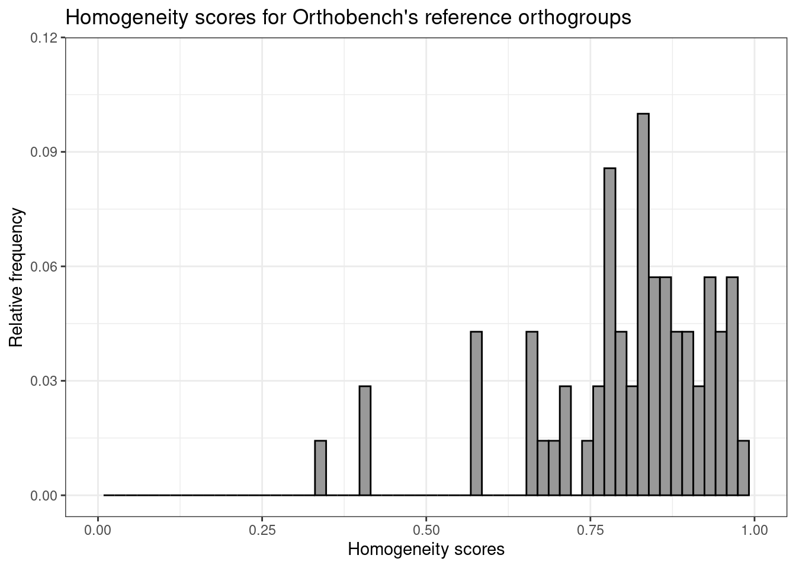

set.seed(123)
options(timeout = 6000)
library(cogeqc)
library(tidyverse)
library(httr)
library(here)
library(biomartr)4 Orthogroup assessment in Orthobench
Here, we will assess the orthogroups from the Orthobench data set (Trachana et al. 2011; Emms and Kelly 2020) using orthogroup scores.
4.1 Data acquisition
The data set can be obtained in this GitHub repository. First, let’s create a data frame containing all gene IDs for each species.
# Repo's URL
url <- "https://api.github.com/repos/davidemms/Open_Orthobench/git/trees/master?recursive=2"
# Get all file paths
paths <- GET(url) |> content()
# Get only file paths for sequence files
paths <- unlist(lapply(paths$tree, function(x) x$path))
sequence_paths <- data.frame(
Path = paths
) |>
separate(Path, c("base", "folder", "filename"), "/") |>
filter(folder == "Input") |>
filter(str_detect(filename, "\\.fa")) |>
mutate(
download_path = file.path(
"https://github.com/davidemms/Open_Orthobench/raw/master",
base, folder, filename
)
)
# Create a data frame of gene IDs per species
genes_per_species <- Reduce(rbind, lapply(seq_len(nrow(sequence_paths)), function(x) {
species <- gsub(".pep.*", "", sequence_paths$filename[x])
gene_ids <- names(
Biostrings::readAAStringSet(sequence_paths$download_path[x])
)
species_and_genes <- data.frame(
Species = species,
Gene = gene_ids
)
return(species_and_genes)
}))Now, we will get all reference orthogroups from Orthobench and reshape them so that they look like the standard orthogroup data frame in cogeqc (with columns Orthogroup, Species, and Gene).
# Get URL to each orthogroup
og_paths <- data.frame(
Path = paths
) |>
separate(Path, c("base", "folder", "filename"), "/") |>
filter(folder == "RefOGs") |>
filter(str_detect(filename, "\\.txt")) |>
mutate(
download_path = file.path(
"https://github.com/davidemms/Open_Orthobench/raw/master",
base, folder, filename
)
)
# Read orthogroups and reformat them as cogeqc's orthogroup data frame
reference_ogs <- Reduce(rbind, lapply(seq_len(nrow(og_paths)), function(x) {
og_name <- gsub(".txt", "", og_paths$filename[x])
og_genes <- readLines(og_paths$download_path[x])
og_df <- data.frame(
Orthogroup = og_name,
Gene = og_genes
) |>
left_join(genes_per_species) |>
dplyr::select(Orthogroup, Species, Gene)
return(og_df)
}))Finally, we will use the biomartr package (Drost and Paszkowski 2017) to obtain protein domain annotation for each species from Ensembl.
annotation_list <- lapply(unique(reference_ogs$Species), function(x) {
species_id <- paste0(
tolower(substr(x, 1, 1)), # first letter of genus
gsub(".*_", "", gsub("\\..*", "", x)) # entire specific epithet
)
if(startsWith(x, "Canis")) {
species_id <- "clfamiliaris"
}
genes <- reference_ogs |>
filter(Species == x) |>
pull(Gene)
annot <- biomart(
genes = genes,
mart = "ENSEMBL_MART_ENSEMBL",
dataset = paste0(species_id, "_gene_ensembl"),
attributes = "interpro",
filters = "ensembl_peptide_id"
) |>
dplyr::select(Gene = ensembl_peptide_id, Annotation = interpro)
return(annot)
})
names(annotation_list) <- unique(reference_ogs$Species)
# Remove empty elements (i.e., species for which we could not obtain annotation)
empty <- sapply(annotation_list, nrow) == 0
annotation_list <- annotation_list[!empty]4.2 Orthogroup assessment
Now that we have the orthogroup data frame and the annotation list, we can calculate homogeneity scores.
p_orthobench_homogeneity <- reference_ogs |>
## Remove species for which we could not obtain domain annotation
filter(Species %in% names(annotation_list)) |>
## Calculate homogeneity scores
left_join(Reduce(rbind, annotation_list)) |>
calculate_H(correct_overclustering = FALSE) |>
dplyr::filter(!is.na(Score)) |>
## Plot a histogram of scores
ggplot(aes(x = Score, y = ..count../sum(..count..))) +
geom_histogram(fill = "grey60", color = "black", bins = 60) +
labs(
title = "Homogeneity scores for Orthobench's reference orthogroups",
y = "Relative frequency", x = "Homogeneity scores"
) +
xlim(0, 1) +
theme_bw()
p_orthobench_homogeneity
The plot shows that homogeneity scores for reference orthogroups tend to be very close to 1, as expected, which validates the rationale behind our approach. Of note, most orthogroups do not reach perfect homogeneity, probably due to domain gains and losses throughout their evolution, but they are still very close to 1. In summary, our findings here demonstrate that reference-quality orthogroups should indeed have homogeneity scores as close to 1 as possible, and users should seek a similar distribution when inferring orthogroups for their own data sets.
Session info
This document was created under the following conditions:
─ Session info ───────────────────────────────────────────────────────────────
setting value
version R version 4.3.0 (2023-04-21)
os Ubuntu 20.04.5 LTS
system x86_64, linux-gnu
ui X11
language (EN)
collate en_US.UTF-8
ctype en_US.UTF-8
tz Europe/Brussels
date 2023-08-04
pandoc 3.1.1 @ /usr/lib/rstudio/resources/app/bin/quarto/bin/tools/ (via rmarkdown)
─ Packages ───────────────────────────────────────────────────────────────────
package * version date (UTC) lib source
AnnotationDbi 1.62.0 2023-04-25 [1] Bioconductor
ape 5.7-1 2023-03-13 [1] CRAN (R 4.3.0)
aplot 0.1.10 2023-03-08 [1] CRAN (R 4.3.0)
beeswarm 0.4.0 2021-06-01 [1] CRAN (R 4.3.0)
Biobase 2.60.0 2023-04-25 [1] Bioconductor
BiocFileCache 2.8.0 2023-04-25 [1] Bioconductor
BiocGenerics 0.46.0 2023-04-25 [1] Bioconductor
biomaRt 2.56.0 2023-04-25 [1] Bioconductor
biomartr * 1.0.3 2023-05-07 [1] CRAN (R 4.3.0)
Biostrings 2.68.0 2023-04-25 [1] Bioconductor
bit 4.0.5 2022-11-15 [1] CRAN (R 4.3.0)
bit64 4.0.5 2020-08-30 [1] CRAN (R 4.3.0)
bitops 1.0-7 2021-04-24 [1] CRAN (R 4.3.0)
blob 1.2.4 2023-03-17 [1] CRAN (R 4.3.0)
cachem 1.0.8 2023-05-01 [1] CRAN (R 4.3.0)
cli 3.6.1 2023-03-23 [1] CRAN (R 4.3.0)
cogeqc * 1.4.0 2023-04-25 [1] Bioconductor
colorspace 2.1-0 2023-01-23 [1] CRAN (R 4.3.0)
crayon 1.5.2 2022-09-29 [1] CRAN (R 4.3.0)
curl 5.0.0 2023-01-12 [1] CRAN (R 4.3.0)
data.table 1.14.8 2023-02-17 [1] CRAN (R 4.3.0)
DBI 1.1.3 2022-06-18 [1] CRAN (R 4.3.0)
dbplyr 2.3.2 2023-03-21 [1] CRAN (R 4.3.0)
digest 0.6.31 2022-12-11 [1] CRAN (R 4.3.0)
dplyr * 1.1.2 2023-04-20 [1] CRAN (R 4.3.0)
evaluate 0.20 2023-01-17 [1] CRAN (R 4.3.0)
fansi 1.0.4 2023-01-22 [1] CRAN (R 4.3.0)
farver 2.1.1 2022-07-06 [1] CRAN (R 4.3.0)
fastmap 1.1.1 2023-02-24 [1] CRAN (R 4.3.0)
filelock 1.0.2 2018-10-05 [1] CRAN (R 4.3.0)
forcats * 1.0.0 2023-01-29 [1] CRAN (R 4.3.0)
generics 0.1.3 2022-07-05 [1] CRAN (R 4.3.0)
GenomeInfoDb 1.36.0 2023-04-25 [1] Bioconductor
GenomeInfoDbData 1.2.10 2023-04-28 [1] Bioconductor
ggbeeswarm 0.7.2 2023-04-29 [1] CRAN (R 4.3.0)
ggfun 0.0.9 2022-11-21 [1] CRAN (R 4.3.0)
ggplot2 * 3.4.1 2023-02-10 [1] CRAN (R 4.3.0)
ggplotify 0.1.0 2021-09-02 [1] CRAN (R 4.3.0)
ggtree 3.8.0 2023-04-25 [1] Bioconductor
glue 1.6.2 2022-02-24 [1] CRAN (R 4.3.0)
gridGraphics 0.5-1 2020-12-13 [1] CRAN (R 4.3.0)
gtable 0.3.3 2023-03-21 [1] CRAN (R 4.3.0)
here * 1.0.1 2020-12-13 [1] CRAN (R 4.3.0)
hms 1.1.3 2023-03-21 [1] CRAN (R 4.3.0)
htmltools 0.5.5 2023-03-23 [1] CRAN (R 4.3.0)
htmlwidgets 1.6.2 2023-03-17 [1] CRAN (R 4.3.0)
httr * 1.4.5 2023-02-24 [1] CRAN (R 4.3.0)
igraph 1.4.2 2023-04-07 [1] CRAN (R 4.3.0)
IRanges 2.34.0 2023-04-25 [1] Bioconductor
jsonlite 1.8.4 2022-12-06 [1] CRAN (R 4.3.0)
KEGGREST 1.40.0 2023-04-25 [1] Bioconductor
knitr 1.42 2023-01-25 [1] CRAN (R 4.3.0)
labeling 0.4.2 2020-10-20 [1] CRAN (R 4.3.0)
lattice 0.20-45 2021-09-22 [4] CRAN (R 4.2.0)
lazyeval 0.2.2 2019-03-15 [1] CRAN (R 4.3.0)
lifecycle 1.0.3 2022-10-07 [1] CRAN (R 4.3.0)
lubridate * 1.9.2 2023-02-10 [1] CRAN (R 4.3.0)
magrittr 2.0.3 2022-03-30 [1] CRAN (R 4.3.0)
memoise 2.0.1 2021-11-26 [1] CRAN (R 4.3.0)
munsell 0.5.0 2018-06-12 [1] CRAN (R 4.3.0)
nlme 3.1-162 2023-01-31 [4] CRAN (R 4.2.2)
patchwork 1.1.2 2022-08-19 [1] CRAN (R 4.3.0)
pillar 1.9.0 2023-03-22 [1] CRAN (R 4.3.0)
pkgconfig 2.0.3 2019-09-22 [1] CRAN (R 4.3.0)
plyr 1.8.8 2022-11-11 [1] CRAN (R 4.3.0)
png 0.1-8 2022-11-29 [1] CRAN (R 4.3.0)
prettyunits 1.1.1 2020-01-24 [1] CRAN (R 4.3.0)
progress 1.2.2 2019-05-16 [1] CRAN (R 4.3.0)
purrr * 1.0.1 2023-01-10 [1] CRAN (R 4.3.0)
R6 2.5.1 2021-08-19 [1] CRAN (R 4.3.0)
rappdirs 0.3.3 2021-01-31 [1] CRAN (R 4.3.0)
Rcpp 1.0.10 2023-01-22 [1] CRAN (R 4.3.0)
RCurl 1.98-1.12 2023-03-27 [1] CRAN (R 4.3.0)
readr * 2.1.4 2023-02-10 [1] CRAN (R 4.3.0)
reshape2 1.4.4 2020-04-09 [1] CRAN (R 4.3.0)
rlang 1.1.1 2023-04-28 [1] CRAN (R 4.3.0)
rmarkdown 2.21 2023-03-26 [1] CRAN (R 4.3.0)
rprojroot 2.0.3 2022-04-02 [1] CRAN (R 4.3.0)
RSQLite 2.3.1 2023-04-03 [1] CRAN (R 4.3.0)
rstudioapi 0.14 2022-08-22 [1] CRAN (R 4.3.0)
S4Vectors 0.38.0 2023-04-25 [1] Bioconductor
scales 1.2.1 2022-08-20 [1] CRAN (R 4.3.0)
sessioninfo 1.2.2 2021-12-06 [1] CRAN (R 4.3.0)
stringi 1.7.12 2023-01-11 [1] CRAN (R 4.3.0)
stringr * 1.5.0 2022-12-02 [1] CRAN (R 4.3.0)
tibble * 3.2.1 2023-03-20 [1] CRAN (R 4.3.0)
tidyr * 1.3.0 2023-01-24 [1] CRAN (R 4.3.0)
tidyselect 1.2.0 2022-10-10 [1] CRAN (R 4.3.0)
tidytree 0.4.2 2022-12-18 [1] CRAN (R 4.3.0)
tidyverse * 2.0.0 2023-02-22 [1] CRAN (R 4.3.0)
timechange 0.2.0 2023-01-11 [1] CRAN (R 4.3.0)
treeio 1.24.1 2023-05-31 [1] Bioconductor
tzdb 0.3.0 2022-03-28 [1] CRAN (R 4.3.0)
utf8 1.2.3 2023-01-31 [1] CRAN (R 4.3.0)
vctrs 0.6.2 2023-04-19 [1] CRAN (R 4.3.0)
vipor 0.4.5 2017-03-22 [1] CRAN (R 4.3.0)
withr 2.5.0 2022-03-03 [1] CRAN (R 4.3.0)
xfun 0.39 2023-04-20 [1] CRAN (R 4.3.0)
XML 3.99-0.14 2023-03-19 [1] CRAN (R 4.3.0)
xml2 1.3.4 2023-04-27 [1] CRAN (R 4.3.0)
XVector 0.40.0 2023-04-25 [1] Bioconductor
yaml 2.3.7 2023-01-23 [1] CRAN (R 4.3.0)
yulab.utils 0.0.6 2022-12-20 [1] CRAN (R 4.3.0)
zlibbioc 1.46.0 2023-04-25 [1] Bioconductor
[1] /home/faalm/R/x86_64-pc-linux-gnu-library/4.3
[2] /usr/local/lib/R/site-library
[3] /usr/lib/R/site-library
[4] /usr/lib/R/library
──────────────────────────────────────────────────────────────────────────────References
Drost, Hajk-Georg, and Jerzy Paszkowski. 2017. “Biomartr: Genomic Data Retrieval with r.” Bioinformatics 33 (8): 1216–17.
Emms, David M, and Steven Kelly. 2020. “Benchmarking Orthogroup Inference Accuracy: Revisiting Orthobench.” Genome Biology and Evolution 12 (12): 2258–66.
Trachana, Kalliopi, Tomas A Larsson, Sean Powell, Wei-Hua Chen, Tobias Doerks, Jean Muller, and Peer Bork. 2011. “Orthology Prediction Methods: A Quality Assessment Using Curated Protein Families.” Bioessays 33 (10): 769–80.